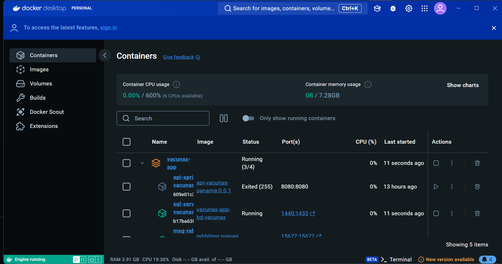
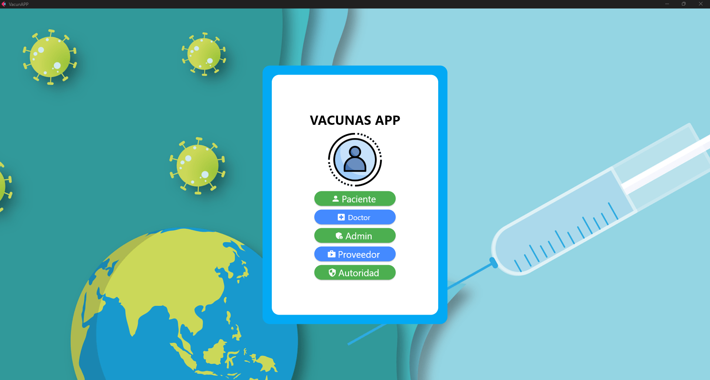

Empaqueta, despliega y escala sin límites. Con Docker, lleva tus aplicaciones a cualquier lugar.
Reseña
Mi nombre es Patrick Villarroel, estudiante de la UTP y me interesa bastante la portabilidad y es pr eso que Docker fue mi tema a elegir porque empecé a usarlo recientemente, y me parece interesante la portabilidad y el uso de contenedores, empecé a usarlo para el uso de APIS: aquí una imagen en lo que trabajé para un proyecto con python.
 